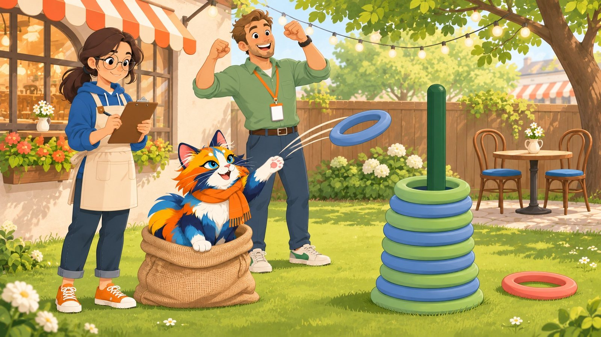
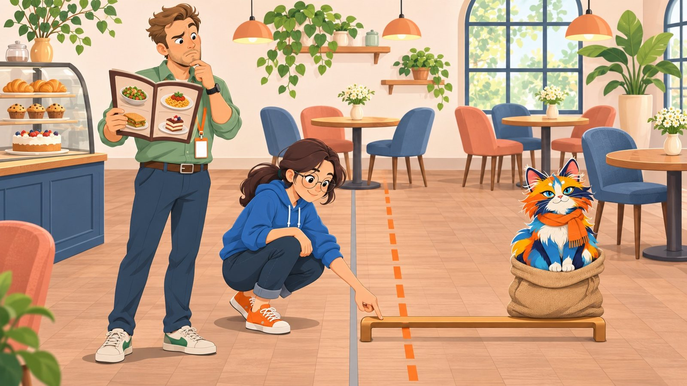

Сначала вспомним
За неделю среднее время доставки выросло на 6 минут, а медиана не изменилась. Что вероятнее всего произошло?
Медиана не замечает крайних значений, а среднее их чувствует. Несколько доставок по три часа, когда курьер застрял или адрес оказался неверным, поднимают среднее, а медиана стоит. Это было в шаге 4: один корпоратив на 50 000 ₽ и средний чек.
A/A‑тест на 400 гостей в группе: в одной заказали 44 гостя (11%), в другой 32 (8%). Платформа сломана?
При маленьких группах разница в 3 заказа из 100 гостей или больше выпадает примерно в одном A/A из семи. Разница есть всегда — это было в шаге 3. Чем больше гостей, тем она меньше.
Шаг 6 из 11
Эффект — это вилка
После шага ты сможешь прочитать вилку в отчёте и сказать, что она разрешает утверждать.

Боб пишет в отчёте: «фото дают +2%». Что не так с одним числом? Мы знаем, что любое среднее шатается и живёт на колоколе. В эксперименте средних два: у контроля и у теста. Значит, и колоколов два.
Пусть команда проверяет фото блюд в меню. В контроле из 1000 зашедших в приложение заказывают 100 (10%). Фото на самом деле добавляют 3 заказа на каждую 1000 гостей, это +3%: доля растёт до 10.3%. В каждой группе по 100 000 человек. Запусти эксперимент и посмотри, что он покажет.
У каждой группы свой колокол: среднее шатается вокруг правды
Колокол разницы «тест минус контроль»
Нажми несколько раз: каждый запуск даёт свою разницу.
Боб записывает в отчёт одно число


Эксперимент показал +2.3%. Так и пишу: фото дают +2.3% к заказам.
Ты только что видел: тот же эксперимент мог показать и +1%, и +5%. Одно число — лишь одна точка с колокола разницы. Алиса предлагает писать вилку: разница плюс-минус две ширины колокола. Мы знаем из шага 5, что в такую полосу попадают 95% случаев.
Боб решает так: выкатываем, если вилка целиком выше нуля. Пусть фото правда дают +3%, а в каждой группе по 100 000 человек. Если запустить 20 таких экспериментов, в скольких вилка позволит выкатить?
Выбери вариант.
Лесенка вилок

Каждая строка — один эксперимент: точка — его разница, отрезок — вилка ± 2 ширины. Зелёная линия — настоящий эффект. Подвигай эффект и число людей.
Каждая полоска — вилка одного эксперимента, то есть 95% доверительный интервал, точка — его разница
Три вилки — три разных вывода
В отчёте о тесте обычно стоят разница и вилка вокруг неё. Вилка говорит, какие эффекты согласуются с данными. Вот три типичных случая.
Три примера: 95% доверительный интервал разницы
Вилка — правды, которые остались живы

Я раздал 40 промокодов, и 24 гостя сделали заказ.
Это 60%, а промокод окупается уже с 50%. Запускаем на всю сеть!

24 из 40 — одна точка. Давай проверим, какие доли вообще уживаются с таким результатом, — и есть ли среди них 50%.
Пусть на самом деле по промокоду заказывает половина гостей. Тогда, раздавая по 40 промокодов, Котейка получал бы то 17 заказов, то 23, то 20. Результаты легли бы горкой. Посмотрим, где на этой горке наши 24. Если в середине, такая правда с данными уживается. Если в редком краю горки, правда гаснет.
Промокод окупается, если по нему заказывает хотя бы половина гостей. Если попробовать каждую правду от 0 до 100%, какие останутся гореть — и горит ли 50%?
Столбики — сколько заказов из 40 бывает при этой правде; красные — редкие края горки; кружки — правды от 0 до 100%
Каждый кружок мы проверили одним и тем же вопросом: обычно ли выглядят 24 из 40 при такой правде? Горящие стоят подряд, это и есть вилка: от 44 до 74%. Порог окупаемости, половина гостей, тоже внутри. Значит, по 40 промокодам нельзя утверждать, что промокод окупается: такой результат мог выпасть и у промокода, на который откликается каждый второй или даже меньше.
Котейка раздал уже 160 промокодов, заказали 96 гостей — снова 60%. Можно ли теперь сказать, что промокод окупается?
Вчетверо больше гостей — вдвое уже вилка, как в шаге 5: теперь горят правды примерно от 52 до 67%. Половина гостей за краем: при 160 промокодах 96 заказов у промокода «каждый второй» — редкость. Доля не изменилась, а решение — да: его меняет число гостей.
Идея из видеокурса: Академия аналитиков Авито, «Прикладная статистика»
Вилка и две линии: ноль и порог пользы

Ноль отвечает на вопрос «есть ли эффект». А бизнесу нужно знать ещё одно: окупится ли он. Фото блюд стоят денег: фотограф, вёрстка, обновление меню. Допустим, они окупаются, если средний чек вырастет хотя бы на 3 ₽ с заказа при чеке 600 ₽, то есть на 0.5%.
Это вторая линия на шкале — порог пользы. Его договариваются провести до теста. Теперь у каждой вилки два вопроса: целиком ли она выше нуля и где она относительно порога.
Пять вилок среднего чека, это 95% доверительные интервалы: сплошная линия — ноль, пунктир — порог пользы
Вместе это таблица из двух вопросов:
| Вилка целиком ниже порога | Вилка заходит за порог | |
|---|---|---|
| Целиком выше нуля | Эффект есть, но мелкий (3) | Эффект есть и может окупиться (2); если и нижний край выше порога — катим (1) |
| Задевает ноль | Важного эффекта нет (4) | Мало данных, пока не знаем (5) |
Фото окупаются, если средний чек вырастет хотя бы на 0.5%. Тест показал +0.85%, вилка от +0.2 до +1.5%. Что можно сказать?
Вилка целиком выше нуля: шумом рост объяснить трудно. Но она заходит под порог: эффекты от +0.2 до +0.5% с данными тоже согласуются, а они не окупятся. Дальше решает цена ошибки. Нужна вилка уже — запускают новый тест, заранее рассчитанный на нужную ширину вилки: вчетверо больше гостей — вдвое уже вилка. А если фото дешёвые и их легко убрать, можно и катить.
Значимо ≠ выгодно
Кафе решило дарить печеньку к каждому заказу. Тест показал: средний чек вырос на 9 ₽, и вилка целиком выше нуля, значимо. Но печенька обходится кафе в 12 ₽. На 1000 заказов это +9000 ₽ выручки и −12 000 ₽ на печеньки. «Значимо» значит «шумом трудно объяснить», а не «выгодно». Выгоду показывает только порог пользы.
Идеи из книг: Daniël Lakens, «Improving Your Statistical Inferences»; Чарльз Уилан, «Голая статистика»
Монетка под лапой
Я бросил монетку и накрыл её лапой. Какой шанс, что там орёл?
До броска было 50 на 50. А сейчас орёл либо лежит под лапой, либо нет — просто мы не знаем.
С вилкой так же. Пока эксперимент не запущен, можно сказать: способ «разница ± 2 ширины» накроет правду примерно в 95 случаях из 100 — это мы видели на лесенке. Но когда вилка уже посчитана, правда либо внутри, либо снаружи. Про одну конкретную вилку «95%» не говорят.
В отчёте: «эффект +2.3%, вилка от +0.2 до +4.4%». Какая формулировка верная?
«95%» — свойство способа: если повторять эксперименты, такие вилки накроют правду примерно в 95 случаях из 100. А про эту вилку честно сказать так: эффекты от +0.2 до +4.4% хорошо согласуются с данными. Конкретная вилка — как монетка под лапой: правда в ней либо есть, либо нет.
Идея из книги: Дэвид Шпигельхалтер, «Искусство статистики»
Сколько это в заказах
«+18%» звучит внушительно. Но процент от процента легко обманывает. Переведём его в живых гостей.
100 гостей без фичи и с фичей
Боб радуется: «В редком разделе „Торты на заказ“ конверсия выросла на 50%!». Без фичи там заказывали 2 гостя из 1000. Сколько лишних заказов это даёт на 1000 гостей?
Было 2 заказа на 1000 гостей, стало 3. Полтора раза — это всего один лишний торт на тысячу посетителей раздела. Прежде чем радоваться процентам, спрашивай: «а в штуках сколько?»
Идея из книги: Дэвид Шпигельхалтер, «Искусство статистики»
От чего зависит ширина вилки
Вилка — это колокол разницы, и его ширина подчиняется тем же правилам, что в шаге 5. Только колокол разницы примерно в 1.4 раза шире каждого из двух: у разницы шатаются обе группы сразу.
В 4 раза больше людей — вилка, то есть 95% доверительный интервал, вдвое уже
Поэтому эффект в +3% при 100 000 людях то ловится, то нет: вилка в ± 2.6% почти такая же, как сам эффект. Как выбирать число людей заранее, разберём в шаге 9.
Выборка из выборки
Ширину вилки можно получить и без всяких правил. У нас есть всего одна выборка — 30 чеков из кафе. Будем много раз тянуть из неё новые выборки того же размера с возвращением: вытянули чек, записали, положили обратно. Какие‑то чеки попадут дважды, какие‑то не попадут вовсе. Так мы имитируем «а что, если бы нам попались другие гости».
Наша выборка, среднее —:
Вытянули. Красные с ×2, ×3 — чек попал несколько раз, бледные в нашей выборке — не попали ни разу. Среднее: —
Средние всех вытянутых выборок
Средние выборок, вытянутых с возвращением, гистограмма
Идея из книги: Дэвид Шпигельхалтер, «Искусство статистики»
Читаем вилки
Разница +1.4%, вилка от −0.8 до +3.6%. Что можно сказать?
Вилка задевает ноль: в ней есть и небольшие минусы, и заметные плюсы. Это «не значимо», то есть «пока не знаем». Края при этом кое‑что говорят: эффект больше +3.6% или хуже −0.8% данные почти исключают.
Тест показал +2.3%, вилка от +0.2 до +4.4%. Что честнее написать в отчёте?
Эффект положительный, но его размер известен только с точностью до вилки. Лучшая оценка — середина, около +2%, но правда может оказаться в любом месте вилки. Одно число создаёт ложное ощущение точности, а верхний край — ложные ожидания.
Команда провела 20 экспериментов, в которых фича на самом деле ничего не меняла. Сколько вилок, примерно, не накроют ноль?
Вилка накрывает правду в 95% случаев, значит промахивается в 5%: одна из двадцати. Эта одна покажет «значимый» эффект, которого нет. К этому вернёмся в шагах 8 и 10.
Результат — это вилка
- Разница в эксперименте шатается: у контроля и теста по колоколу, и у разницы свой колокол.
- Вилка — разница ± 2 ширины колокола разницы. В 95 случаях из 100 она накрывает настоящий эффект.
- Вилка целиком выше нуля — ноль и минусы с данными согласуются плохо. Задевает ноль — смотри на края. Если вилка широкая, пока не знаем. Если узкая вокруг нуля, эффект если и есть, то не больше края.
- Значимо ≠ выгодно. Кроме нуля, на шкале есть порог пользы. Вилка целиком выше порога — катим. Выше нуля, но задевает порог — эффект есть, но может не окупиться.
- Вчетверо больше людей — вдвое уже вилка, как в шаге 5. Её можно получить и без правил — вытягивая выборки из выборки.
- Про одну вилку не говорят «правда внутри с вероятностью 95%»: 95% — свойство способа. И проценты всегда переводим в штуки: «+18%» — это 6 заказов из 100 против 7.
Теперь у того, что мы сделали руками, есть названия:
- Доверительный интервал
- вилка вокруг разницы, в 95% случаев накрывает настоящий эффект
- Значимо
- интервал целиком по одну сторону от нуля
- Порог пользы
- самый маленький эффект, ради которого фичу стоит катить; его задают до теста